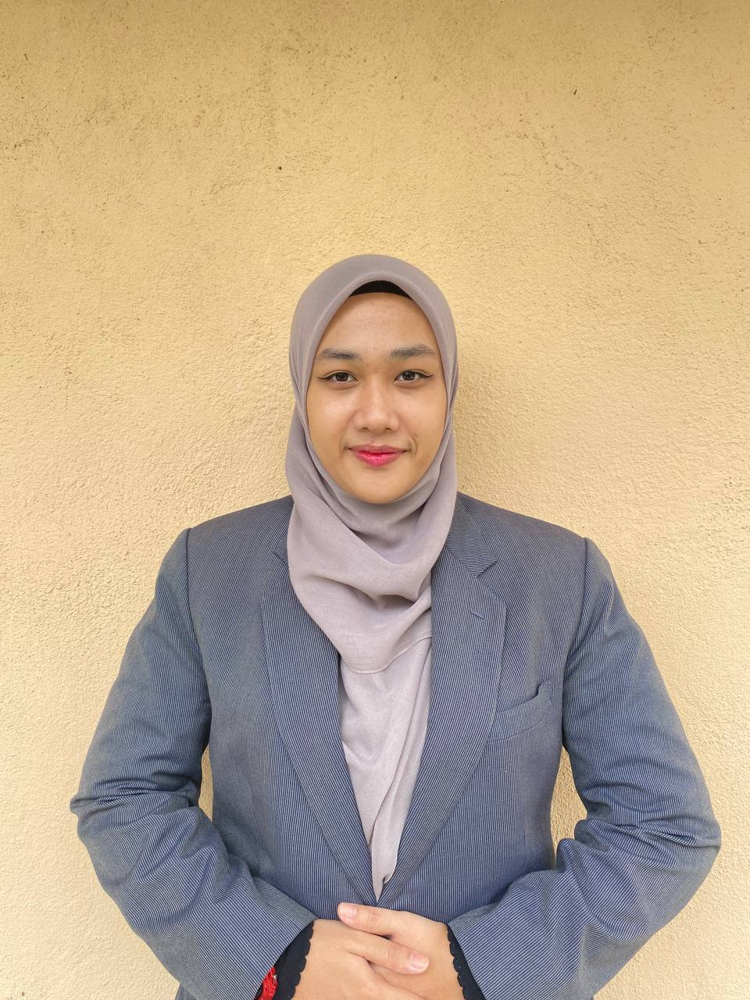

Introduction of Myself
| Name | Nur Anisa Binti Abd. Wahab |
| Date Of Birth | 15 January 2002 (21 Years Old) |
| Place Of Birth | Sultanah Nur Zahirah Hospital, Kuala Terengganu, Terengganu |
| Address | Lot 4238, Kampung Bukit Parit, 21600 Marang, Terengganu |
| Motto | If tired, rest for a while. Don't ever give up. |
Hello, as shown above, my name is Nur Anisa but my family called me Caa, while my close friends called me Icha and im 21 years old. Both of my parents are from Terengganu and im fully growing up at there, as a result, im 100% pure Terengganu. Im growing up with 5 siblings including me and im the youngest one. My oldest siblings is my sister, she worked as a lecturer at Terengganu. Next, the second oldest is my second sister, she stay at Kuala Lumpur and worked as science officer at National Science Center of Malaysia. Besides that, i also have brothers, my first brother is teacher at SK Taman Kosas, Ampang while my second brother is Medical Assistant at Banting, Selangor. lastly, for both of my parents was Retired Goverment staff.